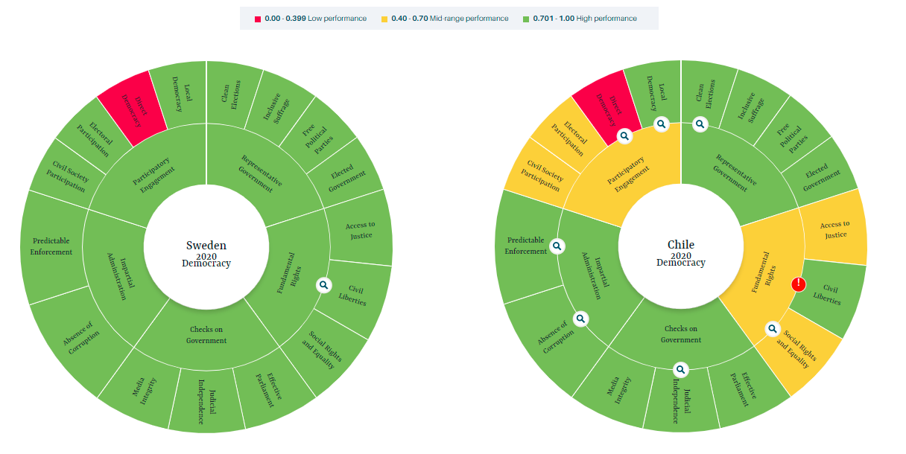

2.2 Comparación democratica entre Chile y Suecia
Para una primera aproximación general a la diferencia de la calidad de la democracia entre Chile y Suecia, utilizaremos el Indice de la democracia, más específicamente, la tipología por dimensión. En ella se clasifica el desempeño en cada dimensión y subdimensión de la democracia. Las cinco dimensiones consideradas por el índice de la democracia son: la existencia de un gobierno representativo, de derechos fundamentales, de fiscalización del gobierno, una administración imparcial y el involucramiento en la participación política.
Mientras que Suecia posee un desempeño adecuado en cada una de las cinco dimensiones del índice de la democracia, Chile posee un desempeño adecuado en tres y un desempeño mediocre en dos áreas. La primera de estas áreas es la garantía de derechos fundamentales, siendo Chile deficitario en otorgar acceso a la justicia y derechos sociales. La segunda de estas áreas es el compromiso con la participación política, en donde solo una dimensión es adecuada, la democracia local.

Respecto a la garantía de derechos fundamentales, Chile ha presentado problemas sobre la Integridad Personal y Seguridad, pues existen casos de uso excesivo de la fuerza por agentes del estado, de hecho, la “Justicia chilena procesó a nueve militares por delitos de tortura contra un grupo de jóvenes” . Además, “Desde octubre de 2019, cuando comenzaron las protestas que dejaron unas 30 personas muertas y miles de heridos y detenidos, se han abierto más de 4.600 casos contra agentes policiales o militares”. En línea con estas faltas al debido proceso, se han registrado casos de detenciones arbitrarias (DI, 2021).
Respecto al compromiso con la participación, Chile, a diferencia de Suecia presenta un desempeño no optimo en dos dimensiones, en la participación electoral y en la participación civil. La participación electoral chilena difícilmente supera el 50% en las elecciones, lo cual ocurre desde la eliminación del voto obligatorio en el 2013. Por su parte Suecia logra alrededor de un 87% de participación [IDEA] (https://www.idea.int/data-tools/country-view/261/40). En suma, aunque ambos países tienen gobiernos representativos, la democracia de Suecia destaca en la garantía de derechos sociales y de acceso a la justicia, así como también destaca en el involucramiento político.